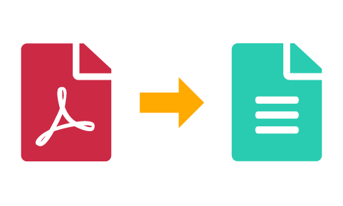

pip install pdfplumber #Library used to extract text from pdf documents
pip install pandas #Library to manipulate dataframes
pip install tabula-py tabulate #Library to extract tables from PDF documents. 
The ability to extract and manipulate data from PDF files is an essential skill for anyone who works with digital documents. For example: organizations, governments, universities, and businesses use themas tools to publish data. Just imagine this: I’ve often seen governments publish their data in pdfs as tables. As a public policy maker or as a data analyst, that can be painful; imagine translate all that information by hand or using paid tools as PDFTables or Convert from PDF to Excel online. This is where Python and the pdfplumber and tabulate libraries comes in handy: it allows us to extract text, tables, and other data from PDF files with ease, making it a valuable tool for data analysis and processing. I would also add that this skill is useful as a crucial step for Natural Language Processing since a lot of potential inputs right now are just in pdf texts.
In the next lines, I’ll show how we can extract text from PDF documents that also includes tables. This approach is easy to understand and reliable, so, anyone can posses and domain this skill; you just need a little bit of knowledge about Python and how we can work with objects.
Important
The next approach applies only to PDF documents that have text inside and are not scanned documents. If you have a pdf document that are scanned text, then Optical character recognition (OCR) algorithms are necessary to realize this task. This method can be implemented in another entry within the Hertie Coding Club.
If you are working within your Python environment, please install this packages. Otherwise, I’ll give you the google collab where you can run Python code without installing it in your computer.
Checkout
If you are running the code locally, please be sure that you have installed the latest Java version since tabulate works within this framework. tabulate library uses Java to render the results.
Install packages
Extract data from a PDF document
This is the document that we will use to this example. It’s a document from the Hertie School that describes the Study, Examination, and Admission Rules in 2016 for the MPP program. Here our goal will be extract all the content from it and put it in a dataframe.
#Import libraries
import pdfplumber as pp
import pandas as pd
#Set PDF file name
pdf = 'MPP_Study_Example.pdf'
#Open PDF file and extract data from each page
with pp.open(pdf) as book:
#Initialize an empty list to store text
page_data = []
#Loop over each page in the PDF file
for page_no, page in enumerate(book.pages, start = 1):
#Extract text from page
data = page.extract_text()
#Append page data to list
page_data.append([pdf, data.strip(), page_no])
#Create pandas DataFrame from page data and set column names
df_text = pd.DataFrame(page_data, columns=['file_name', 'text', 'page_number'])
#Display DataFrame
print(df_text) file_name text
0 MPP_Study_Example.pdf Master of Public Policy\nStudy, Examination, a... \
1 MPP_Study_Example.pdf I. Study Rules\n§ 1 Object\nThese study rules ...
2 MPP_Study_Example.pdf (3) Advanced Curriculum\nIn the second year of...
3 MPP_Study_Example.pdf § 6 Examination Committee\n(1) An Examination ...
4 MPP_Study_Example.pdf (4) Upon written request, the Examination Comm...
5 MPP_Study_Example.pdf (5) Students can request to be ranked in relat...
6 MPP_Study_Example.pdf (2) In addition to the degree certificate, stu...
7 MPP_Study_Example.pdf (2) If the Examination Committee comes to the ...
8 MPP_Study_Example.pdf 2. a high level of proficiency in written and ...
page_number
0 1
1 2
2 3
3 4
4 5
5 6
6 7
7 8
8 9 We have three columns. The first one shows the document’s name where we extracted the text. The second column contains the text, and the third one the number of pages. Of course, you can modify the code and the variable names according to your necessities.
If you want to save your dataframe, remember this functions:
# Save the dataframe to a CSV file
df_text.to_csv('df_text_pdf.csv', index=False)
# Save the dataframe to an Excel file
df_text.to_excel('df_text_pdf.xlsx', index=False)If you look close, there is a table in page number 5. PDFplumber renders that as text and not in a table format. One approach to this would be use now the tabulate library to extract exclsuively tables from our document. The table inside the document is not clear or doesn’t have a completely table format. However, we can still apply our function to extract that table and approach it to a nice table format.
#Import required libraries
import tabula
import numpy as np
from tabula import read_pdf
from tabulate import tabulate
#Set the path to the PDF file
pdf_path = 'MPP_Study_Example.pdf'
#Read all tables from the PDF file into a list of DataFrames
df_list = tabula.read_pdf(pdf_path, pages="all", multiple_tables=True)
#Print the list of DataFrames
print(df_list)[ (2)
0 NaN \
1 (3)
2 NaN
3 NaN
4 NaN
5 NaN
6 (4)
7 NaN
8 NaN
9 (5)
10 NaN
11 (6)
12 NaN
13 NaN
14 NaN
15 (7)
16 NaN
17 NaN
18 (8)
The Academic Senate of the Hertie School of Governance elects the faculty members for a
0 two-year term and the student representative f...
1 The Examination Committee meets in camera and ...
2 the Committee are obliged to maintain secrecy ...
3 them in their capacity as members of the Commi...
4 individual students. The members shall also no...
5 end.
6 The Examination Committee is responsible for t...
7 shall ensure the timely fulfilment of the regu...
8 involved.
9 The Examination Committee makes and accepts su...
10 the Examination Rules.
11 Credits earned by a student at another univers...
12 Examination Committee. The Committee shall app...
13 regard to study contents, learning objectives,...
14 examination requirement.
15 A student’s professional experience shall be r...
16 Examination Committee. The Committee shall app...
17 relevant in respect to contents and learning o...
18 The Examination Committee shall decide in all ... , German Numerical Alphanumeric Definition
0 Grade Grade Grade NaN
1 1,0 100-96% A+ NaN
2 NaN NaN NaN excellent
3 1,3 95-91% A NaN
4 1,7 90-86% A- NaN
5 NaN NaN NaN very good
6 2,0 85-81% B+ NaN
7 2,3 80-76% B NaN
8 NaN NaN NaN good
9 2,7 75-71% B NaN
10 3,0 70-66% B- NaN
11 NaN NaN NaN satisfactory
12 3,3 65-61% C+ NaN
13 3,7 60-56% C NaN
14 NaN NaN NaN sufficient
15 4,0 55-50% C- NaN
16 5,0 49-0% F fail, (2) A failed requirement can be repeated twice only if it leads to a failed examination (i.e. if the
0 weighted average grade of all requirements is ...
1 The student shall be given one opportunity to ...
2 of the subsequent semester.
3 (3) For the last repetition of an examination ...
4 appoint two graders.
5 (4) The regulations concerning the master thes...
6 § 11 Master Thesis
7 (1) Students submit their master thesis to the...
8 The submission date shall be determined for ea...
9 Committee.
10 (2) The master thesis shall be supervised by a...
11 the Examination Committee can appoint a member...
12 supervisor.
13 (3) The written master thesis is graded by the...
14 thesis supervisor and one member of the core f...
15 thesis is constituted by the arithmetic mean o...
16 Thesis Committee.
17 (4) Students who fail their written master the... , (1)
0 NaN \
1 NaN
2 (2)
The Admissions Committee decides on admissions in accordance with the guidelines laid
0 down by the Dean as well as on the basis of mo...
1 Committee.
2 The Committee consists of at least six members... ]As you can see, we have a list with three dataframes. Our library recognized 3 tables, however, there is just really one at page 5. Now let’s just keep with the one that matter to us.
print(df_list[1]) German Numerical Alphanumeric Definition
0 Grade Grade Grade NaN
1 1,0 100-96% A+ NaN
2 NaN NaN NaN excellent
3 1,3 95-91% A NaN
4 1,7 90-86% A- NaN
5 NaN NaN NaN very good
6 2,0 85-81% B+ NaN
7 2,3 80-76% B NaN
8 NaN NaN NaN good
9 2,7 75-71% B NaN
10 3,0 70-66% B- NaN
11 NaN NaN NaN satisfactory
12 3,3 65-61% C+ NaN
13 3,7 60-56% C NaN
14 NaN NaN NaN sufficient
15 4,0 55-50% C- NaN
16 5,0 49-0% F failHere is our table or interest. Let’s do some wrangling to clean it.
#Extract the second table from the list and skip the header row
df_table = df_list[1].iloc[1:]
#Replace commas with dots and convert to numeric values
df_table["German"] = pd.to_numeric(df_table["German"].str.replace(',', '.'),
errors='coerce')
#Rename columns
df_table = df_table.rename(columns={'German': 'Grade', 'Numerical': 'Percentage'})
#Define a function to map grades to categories. We are doing this
#since if we use a statement, our code will be larger.
def grade(score):
if score >= 1 and score <= 1.3:
return 'excellent'
elif score > 1.3 and score <= 2:
return 'very good'
elif score > 2 and score <= 2.7:
return 'good'
elif score > 2.7 and score <= 3.3:
return 'satisfactory'
elif score > 3.3 and score < 4:
return 'sufficient'
elif score >= 4:
return 'fail'
else:
return np.nan
#Apply the grade function to create a new column with grade categories
df_table['Grade Category'] = df_table['Grade'].apply(grade)
#Drop rows with missing grade categories
df_table = df_table.dropna(subset=['Grade Category'])
#Drop the "Definition" column
df_table = df_table.drop('Definition', axis=1)
#Extract minimum and maximum percentage values to replace the Percentage.
#Here we use some regex to obtain just the numbers within a "-"
df_table[['Min%', 'Max%']] = df_table['Percentage'].str.extract(r'(\d+)-(\d+)%')
#Convert percentage values to float
df_table[['Min%', 'Max%']] = df_table[['Min%', 'Max%']].astype(float) / 100
#Drop the original "Percentage" column
df_table_final = df_table.drop('Percentage', axis = 1)
#Print the final table
print(df_table_final) Grade Alphanumeric Grade Category Min% Max%
1 1.0 A+ excellent 1.00 0.96
3 1.3 A excellent 0.95 0.91
4 1.7 A- very good 0.90 0.86
6 2.0 B+ very good 0.85 0.81
7 2.3 B good 0.80 0.76
9 2.7 B good 0.75 0.71
10 3.0 B- satisfactory 0.70 0.66
12 3.3 C+ satisfactory 0.65 0.61
13 3.7 C sufficient 0.60 0.56
15 4.0 C- fail 0.55 0.50
16 5.0 F fail 0.49 0.00
Remember
To save a dataframe or your table, use this functions:
# Save the dataframe to a CSV file
df_table_final.to_csv('df_text_pdf.csv', index=False)
# Save the dataframe to an Excel file
df_table_final.to_excel('df_text_pdf.xlsx', index=False)
Extract tables from a PDF document
As you can see, the last example was just a form to deal with a tabl when we don’t have a clear pattern of it in a document. Generally, we need another tool to extract a table from a document since it will be much easier because of the tabula library it’s trained just to recognize tables. Now, we will use another document with cleaner tables, and the library can work even better. We will use a document that contains text but also much cleaner tables.
import tabula
from tabula import read_pdf
from tabulate import tabulate
df_list_example2 = tabula.read_pdf('ast_sci_data_tables_sample.pdf',
pages="all", multiple_tables = True)
#We use len to determine how many tables the document has
len(df_list_example2)3We have for tables. Let’s see them closer:
print(df_list_example2)[ Number of Coils Number of Paperclips
0 5 3, 5, 4
1 10 7, 8, 6
2 15 11, 10, 12
3 20 15, 13, 14, Speed (mph) Driver Car Engine
0 407.447 Craig Breedlove Spirit of America GE J47 \
1 413.199 Tom Green Wingfoot Express WE J46
2 434.220 Art Arfons Green Monster GE J79
3 468.719 Craig Breedlove Spirit of America GE J79
4 526.277 Craig Breedlove Spirit of America GE J79
5 536.712 Art Arfons Green Monster GE J79
6 555.127 Craig Breedlove Spirit of America, Sonic 1 GE J79
7 576.553 Art Arfons Green Monster GE J79
8 600.601 Craig Breedlove Spirit of America, Sonic 1 GE J79
9 622.407 Gary Gabelich Blue Flame Rocket
10 633.468 Richard Noble Thrust 2 RR RG 146
11 763.035 Andy Green Thrust SSC RR Spey
Date
0 8/5/63
1 10/2/64
2 10/5/64
3 10/13/64
4 10/15/65
5 10/27/65
6 11/2/65
7 11/7/65
8 11/15/65
9 10/23/70
10 10/4/83
11 10/15/97 , Time (drops of water) Distance (cm)
0 1 10,11,9
1 2 29, 31, 30
2 3 59, 58, 61
3 4 102, 100, 98
4 5 122, 125, 127]Looks good! Let’s say that I just want the second table, so, I use the index of the list to keep with my dataframe.
print(df_list_example2[1]) Speed (mph) Driver Car Engine
0 407.447 Craig Breedlove Spirit of America GE J47 \
1 413.199 Tom Green Wingfoot Express WE J46
2 434.220 Art Arfons Green Monster GE J79
3 468.719 Craig Breedlove Spirit of America GE J79
4 526.277 Craig Breedlove Spirit of America GE J79
5 536.712 Art Arfons Green Monster GE J79
6 555.127 Craig Breedlove Spirit of America, Sonic 1 GE J79
7 576.553 Art Arfons Green Monster GE J79
8 600.601 Craig Breedlove Spirit of America, Sonic 1 GE J79
9 622.407 Gary Gabelich Blue Flame Rocket
10 633.468 Richard Noble Thrust 2 RR RG 146
11 763.035 Andy Green Thrust SSC RR Spey
Date
0 8/5/63
1 10/2/64
2 10/5/64
3 10/13/64
4 10/15/65
5 10/27/65
6 11/2/65
7 11/7/65
8 11/15/65
9 10/23/70
10 10/4/83
11 10/15/97 Conclusion
Now, we can use this for our own purposes. Asou can see, the process was much straight forward. In conclusion, this is just one approach of multiple ones since there are different libraries depending of what you want to do. However, I like this libraries since are easy to understand. Finally, if you want to reproduce this code, here I leave a Google Colab notebook for you to input your pdf’s and get the text out of it. This step is super interesting and I would say necessary to start a pipeline for NLP models, analysis of text, etc.

Reference
Cite this page: Roa, J. (2023, April 18). PDF to text. Hertie Coding Club. URL